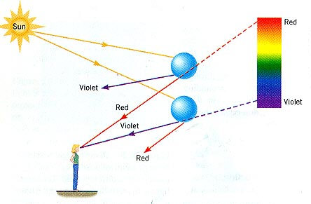
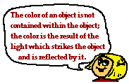

Without explicitly making the statement we have assumed that the
refractive index of a medium is independent of the frequency of the
light transmitted. That is we have assumed for example that red
light and blue light have the same speed when passing through glass (or
any other medium). This is not exactly true, refractive index is
frequency dependent such that for glass, nblue > nred
(blue light is bent more than red light when passing from air to glass)
and the speed of blue light in glass is slightly smaller than the speed
of red light.
This fact may be demonstrated by the production of a spectrum of
colours when white light is incident on a glass prism. [White
light is comprised of all the wavelengths of visible light] Each
constituent of the white light has a slightly different refractive
index and is deflected (according to Snell's law) through a slightly
different angle.
This phenomenon is known as DISPERSION.
White light is dispersed into its constituent
colours.
A rainbow is created by a combination of dispersion and total
internal reflection within water droplets in the atmosphere.

An object appears a particular colour under white light
illumination because it reflects that colour strongly.

For example a red object reflects most of the red wavelength
incident and absorbs most of the other wavelengths. If
such an object is illuminated with blue light it will appear black,
the blue light is absorbed, but there is no red to be reflected.
"There
is no Dark Side of the Moon really. Matter of fact it's all dark"
Pink Floyd